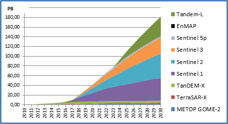
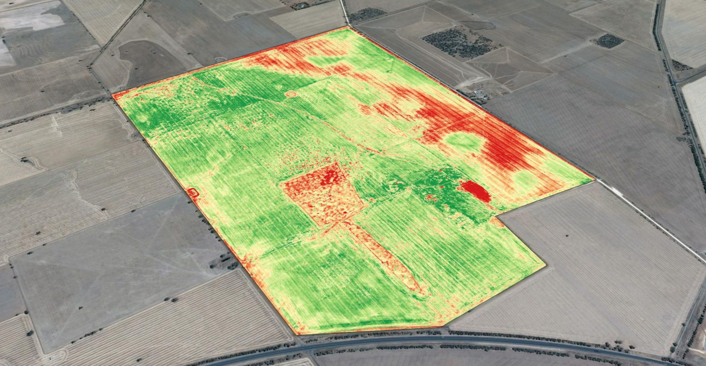

Introduction to
Geospatial Analysis in the Cloud

Nils Ratnaweera
- ZHAW School of Life Sciences and Facility Management
- Institute of Natural Resource Sciences
- Grüentalstrasse 14
- 8820 Wädenswil
- +41 (0) 58 934 55 63
- nils.ratnaweera@zhaw.ch
Position at the ZHAW
- Research Associate at the Research Group for Geoinformatics
- www.zhaw.ch/iunr/geoinformatik
Why in the Cloud?

Source: dlr.de
- Google Earth Engine (GEE)
- Microsoft Planetary Computer (MPC)
- Earth on AWS
- Sentinel Hub
- OpenEO
- Open Data Cube (ODC)
- SEPAL
- JEODPP
- pipsCloud
(outdated)
openEO develops an open API to connect R, Python,
JavaScript and other clients to big Earth observation
cloud back-ends in a simple and unified way.
...most people prefer GEE mostly because it's the good ol' reliable when it comes to EO data on the cloud. Mature, well-documented and a huge community. MPC is the new kid on the block, they provide a more bare-bone version of GEE, with the added advantage of connecting your own computing environment on Azure.
source
cloudcarbonfootprint.org
Google Earth Engine

geemap.org
- Image: band math, clip, convolution, neighborhood, selection ...
- Image Collection: map, aggregate, filter, mosaic, sort ...
- Feature: buffer, centroid, intersection, union, transform ...
- Feature Collection: aggregate, filter, flatten, merge, sort …
- Filter: by bounds, within distance, date, day-of-year, metadata ...
- Reducer: mean, linearRegression, percentile, histogram ….
- Join: simple, inner, outer, inverted ...
- Kernel: square, circle, gaussian, sobel, kirsch …
- Machine Learning: CART, random forests, bayes, SVM, kmeans, cobweb …
- Projection: transform, translate, scale …
Introduction to Javascript
- Open a browser window
- Press F12 to open the developer tools
- Go to the
consoletab - Follow along! (Demo time)
Recap
// Variables are used to store objects, and are defined
// using the keyword var.
var the_answer = 42;
// String objects start and end with double quotes.
var my_variable = "I am a string";
// there are other ways to delare variables in js
let the_answer = 42;
const the_answer = 42;
// we will ignore these
// Statements *should* end in a semi-colon
var test = 'I feel incomplete...'
var test = 'I feel complete...';
- Open a plain text editor
- Create a file with the extension
.html - Create a
scripttag - Open this file in the browser
- Follow along! (Demo time)
Task:
- Create a variable
mynamewith your name - Create a variable
myagewith your age - Calculate your age in days and store it in
myage_days - Print to the console:
Hi, my name is ... and I am ... days old
Task:
- Create a function that converts a number of years to a number of days
- Name the function
years2days
// this is the syntax for creating a function:
function say_something(what){
// do something
};
Recap
// Line comments start with two forward slashes.
// Like this line.
/*
Multi line comments start with a forward slash
and a star,
and end with a star and a forward slash.
*/
// Parentheses are used to pass parameters to functions.
// the function below is console.log
console.log("this is the parameter");
// Square brackets are used to create a list of items
var my_list = ['eggplant', 'apple', 'wheat'];
// Square brackets are also used for selecting items within
// a list. 0 refers to the first item in the list.
my_list[0];
// Curly brackets are used to define "dictionaries"
var my_dict = {'food':'bread', 'color':'red', 'number':42};
// Square brackets are used to access items (by key).
my_dict['color'];
// Or you can use the dot notation to get the same result.
my_dict.color;
// Functions can be defined as a way to reuse code and
// make it easier to read.
function years2days(years){
return years*365
};
years2days(34);
// Functions can be defined as a way to reuse code and
// make it easier to read.
var say_hello = function(string) {
return 'Hello ' + string + '!';
};
say_hello('world');
Javascript in websites
JS is part of a trinity that defines most of the web

Let's take this opportunity to explore and understand this.
(Demo time)
Create an application that takes your name as an input and returns the name backwards.
Tipp: use the methods split, reverse and
join.
First steps in Google Earth Engine
Instructions
- Go to code.earthengine.google.com
- Play around with the Code Editor (create vars, dics, lists...)
- Navigate to a location you know (e.g. your hometown) using the search bar
- Look for a dataset in the search bar
- Create a Repo (New→Repo) named DigitalLifeScience Demos
- Create a new File in this Repo named Demo_1
Task: Identifying Suitable Areas for Renewable Energy Installation
- Elevation: 500 - 1000 MASL
- Slope: 3 - 6°
- Aspect: South facing, between 315° and 45°
Electromagnetic Spectrum in Sentinel S2
Create a True Color Image from the R-/G-/B-Bands
NDIV: normalized difference vegetation index
Your own Project in Google-Earth-Engine
- Reimplement one of the demonstrated analyses to a different area (or implement your own idea)
- Download your results (e.g. as a csv) to your local harddrive.
- Write a brief description of your analysis and your results (use Jupyter, Rmarkdown or Quarto)
- (Optional): Submit via mail to rata@zhaw.ch
- Vegetation Analysis: Calculate the Normalized Difference Vegetation Index (NDVI) for a specific area and time frame. Plot a time series graph showing changes in vegetation over time.
- Land Cover Change Detection: Analyze two satellite images from different years and use image differencing to detect changes in land cover (e.g., urban expansion, deforestation) in a selected region.
- Erosion Analysis: Calculate the difference in terrain elevation between two time periods to assess erosion or deposition in a chosen area.
- Solar Potential Assessment: Calculate the solar potential of different locations within a city and identify areas with the highest solar energy generation potential.
Graded Assignment
Apply the expertise and skills you acquire within the two remotesensing sessions to design and elaborate your own research project. Make sure to describe the motivation, a suitable analysis approach and applicable remote sensing data.
The short research proposal is not to exceed 1 page and can include one figure.
Deadline is one week after the final session of the remote sensing input (3.10./17.10.)